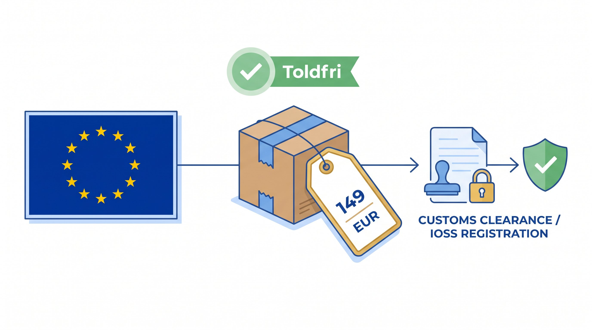

Kunden betaler moms ved kassen. Alternativet: kunden betaler ved levering og returnerer pakken.
Uden IOSS-nummer på forsendelsen: pakken holdes tilbage i tolden. Kunden skal betale moms + 5-15 EUR gebyr. 60-80% returnerer ordren. Du taber: fragt + varer + kunden.
Konsekvensen ved manglende IOSS:
- 20-30% af internationale ordrer returneres (kunde nægter at betale told)
- 5.000-10.000 kr./måned i tabt fragt for en webshop med 200 internationale ordrer
- Kunder klager, negative anmeldelser, lavere konvertering
Hvad er IOSS?
IOSS (Import One Stop Shop) er en EU-momsordning designet til e-handel. Den giver sælgere mulighed for at opkræve og afregne EU-moms på leveringstidspunktet i stedet for at lade kunden betale moms i toldbehandlingen.
Gælder for:
- Sendinger med varens reelle værdi under 150 EUR
- Salg til private forbrugere i EU
- Varer afsendt fra lager uden for EU (fx Kina, UK, USA)
👉 Har du samme udfordring? Se hvordan SmartPack løser det i praksis
Hvad koster manglende IOSS?
| Scenario | Konsekvens | Kr./måned (estimat) |
|---|---|---|
| 200 internationale ordrer/måned uden IOSS | 40-60 returneringer (20-30%) + tabt fragt | 8.000-15.000 kr. |
| Kunde betaler told + gebyr ved levering | Negativ anmeldelse + kunde køber aldrig igen | 500-1.500 kr. per tabt kunde |
| IOSS-nummer mangler på label | Pakke tilbageholdt 3-5 dage + kunde annullerer | 1.200-3.000 kr. per hændelse |
Real cost: For en webshop med 200 internationale ordrer/måned = 96.000-180.000 kr./år i tabt salg ved manglende IOSS.
Hvornår er det et problem?
IOSS er relevant hvis:
- Du dropper fra Kina eller bruger leverandør i UK/USA
- Du har et EU-lager men sender overflow fra eksternt lager
- Du bruger platforme som Amazon, eBay, Etsy (de håndterer IOSS for dig)
- Du sælger lavprisvarer (under 150 EUR) til kunder i DE, FR, PL, SE
Vigtig: 150 EUR er varens toldmæssige værdi, ikke salgsprisen inkl. moms og fragt.
Hvordan i praksis
Registrering til IOSS
Du registrerer dig i ét EU-land og afregner al EU-moms derfra.
- EU-virksomhed: registrer dig via Skattestyrelsen (DK)
- Ikke-EU-virksomhed: kræver en mellemmand/formidler (intermediary) i EU
Ved registrering får du et IOSS-nummer (format: IM + 10 cifre). Dette nummer skal stå på alle forsendelser.
Moms-beregning og -opkrævning
Du skal opkræve destinationslandets momssats på tidspunktet for salget:
- Kunde i Tyskland: 19%
- Kunde i Frankrig: 20%
- Kunde i Danmark: 25%
- Kunde i Luxembourg: 17%
Månedlig indberetning
Hver måned indberetter du salg fordelt på EU-lande og betaler den samlede moms til det land du er registreret i.
Det opdager de fleste for sent
- Første internationale kampagne i uge 10, du sender 150 pakker til Tyskland uden IOSS-nummer. 45 kunder nægter at betale told ved levering. Pakker returneres. Du taber: 54.000 kr. i fragt + varer.
- IOSS-nummer mangler på label i uge 22, du er registreret til IOSS, men dit WMS inkluderer ikke nummeret på fragtetiketten. 80 pakker tilbageholdes i tolden. Kunder klager. Du mister 12 kunder permanent.
- Forkert momssats i uge 35, du opkræver 25% (DK-sats) på alle EU-salg i stedet for destinationslandets sats. Skattemyndigheden opdager det ved årlig kontrol. Du skal tilbagebetale: 35.000 kr. + bøde.
Typiske fejl
- Forkert beregning af tærskel, 150 EUR er varens toldværdi, ikke salgsprisen inkl. moms
- IOSS-nummer mangler på labelen, selv om du er registreret, virker det ikke uden nummeret
- Forkert momssats, DK-virksomhed der opkræver 25% på alle EU-salg er forkert
- Glemmer at indberette månedligt, kræves selv i nul-måneder
- Blander IOSS og OSS, OSS er for lager inden for EU, IOSS er for lager uden for EU
Gør det rigtigt nu
- Integrér IOSS-nummeret i fragtetiketten automatisk, konfigurér dit WMS/fragtsystem inden uge 14
- Brug en toldmægler eller IOSS-formidler, hvis du ikke vil håndtere momsindberetning selv (koster 50-200 EUR/måned)
- Opdatér momssatser kvartålsvist, EU-lande ændrer momssatser (sæt kalender-reminder)
- For varer tæt på 150 EUR: vær særlig opmærksom, korrekt toldværdisætning er kritisk
Brug denne artikel
- ✓ Registrér dig til IOSS via Skattestyrelsen (gratis for EU-virksomheder)
- ✓ Konfigurér dit WMS til automatisk at inkludere IOSS-nummer på fragtlabels
- ✓ Opsut korrekte destinationslandsspecifikke momssatser i dit system
- ✓ Sæt månedlig kalender-reminder til IOSS-indberetning